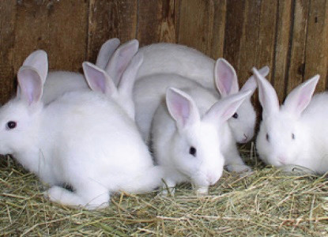
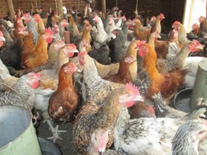
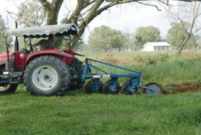
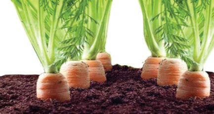

Chapter One
Introduction to Agriculture
Think
“The foundation of life, feeding us and supporting our communities”
Meaning of Agriculture
You have probably seen people at school, at home, or nearby neighbours doing activities related to those shown in Figures 1.1 (a-f). Look at these pictures then try to do Activity 1.1.



